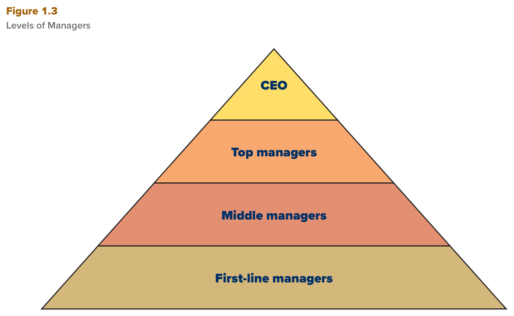
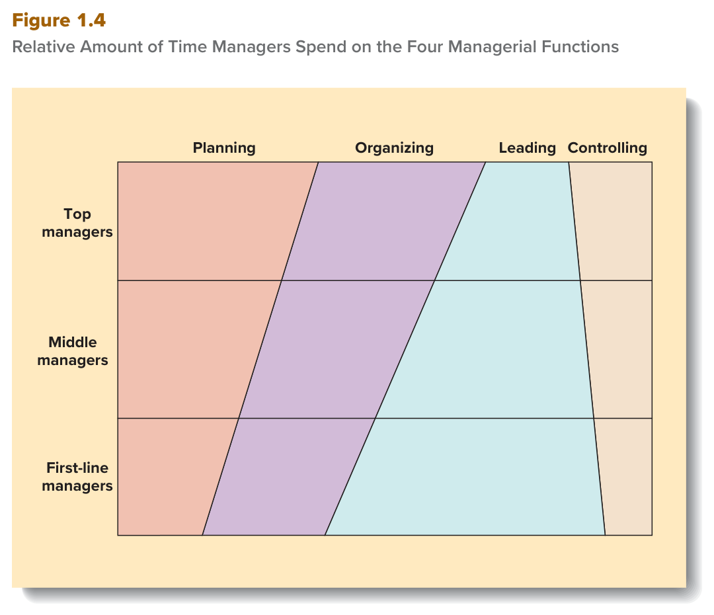
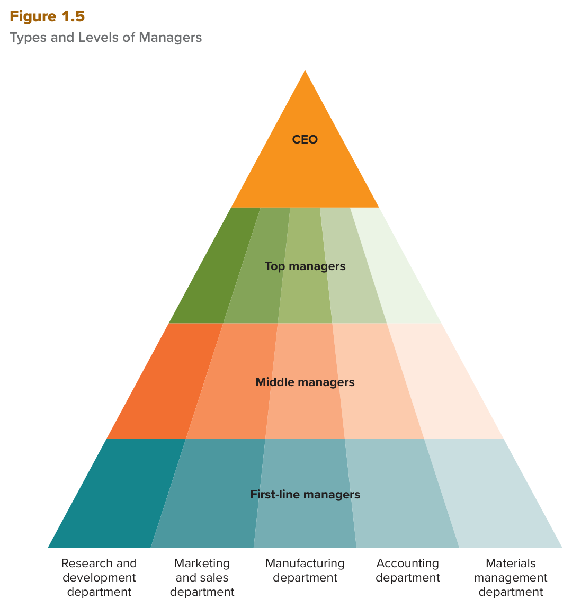

MGT 102 · Chapter 1 · القسم ٣ من ٤:
Levels and Skills of Managers
الهدف LO1-3: Differentiate among three levels of management, and understand the tasks and responsibilities of managers at different levels in the organizational hierarchy.
الهدف LO1-4: Distinguish among three kinds of managerial skill, and explain why managers are divided into different departments to perform their tasks more efficiently and effectively.
في القسم اللي قبل عرفت الوظائف الأربع. الحين السؤال: كل المديرين يسوون نفس الشي؟ لا. الكتاب يقسّم المديرين بطريقتين: حسب مستواهم في الهرم (level in hierarchy)، وحسب نوع مهارتهم وقسمهم (type of skill).
أسئلة هذا القسم في الاختبار كلها «سيناريو»: يعطونك شخص ويسألونك هو أي مستوى، أو أي مهارة يستخدم. فاقرأ أمثلة الكتاب زين، لأنها تجي في الاختيارات بنفس كلماتها.
الكتاب يقول المنظمات عادةً عندها ثلاثة مستويات من الإدارة، مرتّبة في hierarchy of authority (هرم السلطة). الترتيب من تحت لفوق: first-line managers يرفعون تقاريرهم لـmiddle managers، وmiddle managers يرفعون لـtop managers. كل مستوى عنده مسؤوليات مختلفة بس مرتبطة ببعض، وكلها هدفها استخدام الموارد لزيادة efficiency وeffectiveness.
| المستوى | يشرف على مين؟ ووش شغله؟ | أمثلة الكتاب |
|---|---|---|
| First-line managers مديرو الخط الأول — ويسمّونهم supervisors |
يشرف على: الموظفين غير الإداريين (nonmanagerial employees) اللي ينتجون السلع والخدمات فعلياً. شغله: الإشراف اليومي daily supervision على الموظفين. موجودين في كل الأقسام. |
مشرف فريق عمل في مصنع سيارات · رئيسة الممرضات (head nurse) في قسم الولادة · كبير الميكانيكيين في وكالة سيارات |
| Middle managers مديرو الإدارة الوسطى |
يشرف على: الـfirst-line managers. شغله: إيجاد أفضل طريقة لتنظيم الموارد البشرية وغيرها عشان تتحقق أهداف المنظمة. للكفاءة: يساعدون الخط الأول والموظفين يستخدمون الموارد أحسن (تقليل تكاليف التصنيع، تحسين خدمة العملاء). للفعالية: يقيّمون هل الأهداف مناسبة ويقترحون على الإدارة العليا تغييرها. وجزء كبير من شغلهم تطوير المهارات والخبرة (know-how) زي خبرة التصنيع أو التسويق. |
وراء أي فريق مبيعات ممتاز، فيه مدير أوسط يدرّبهم ويحمّسهم ويكافئهم · مدير المدرسة اللي يحمّس المعلّمين |
| Top managers الإدارة العليا |
يشرف على: الـmiddle managers في كل الأقسام. شغله: مسؤولين عن أداء كل الأقسام — عندهم cross-departmental responsibility. يحدّدون أهداف المنظمة (وش السلع والخدمات اللي ننتجها)، يقرّرون كيف الأقسام تتعامل مع بعض، ويراقبون كيف مديري الإدارة الوسطى يستخدمون الموارد. هم المسؤولين النهائيين عن نجاح أو فشل المنظمة، والكل يراقب أداءهم — الموظفين والمستثمرين. |
CEO · COO · نواب الرئيس (vice presidents) |
مين هو الـCEO والـCOO؟

الهرم من فوق لتحت: CEO → Top managers → Middle managers → First-line managers، وتحتهم الموظفين غير الإداريين (مو مستوى إداري). السهم يعني: كل طبقة ترفع تقريرها للي فوقها.
Organizations typically have three levels of management. At the base of the managerial hierarchy are first-line managers, often called supervisors. They are responsible for daily supervision of the nonmanagerial employees who perform the specific activities necessary to produce goods and services. Middle managers are responsible for finding the best way to organize human and other resources to achieve organizational goals. Top managers are responsible for the performance of all departments. They have cross-departmental responsibility. Top managers establish organizational goals, decide how the different departments should interact, and monitor how well middle managers in each department use resources to achieve goals. The top management team is a group composed of the CEO, the COO, and the vice presidents most responsible for achieving organizational goals.
الوظائف الأربع (planning، organizing، leading، controlling) أهميتها النسبية لأي مدير تعتمد على موقعه في الهرم. الكتاب يقول: الوقت اللي يقضيه المدير في التخطيط والتنظيم يزيد كل ما صعد في الهرم.
انتبه: هذا مو معناته الخط الأول ما يخطّط أبداً. من القسم اللي قبل تعرف: كل المستويات تسوي الوظائف الأربع — الفرق هنا في كمية الوقت بس.

اقرأ الصفوف: Top أطول شي عندهم Planning وOrganizing. First-line أطول شي عندهم Leading وControlling. وMiddle بالنص تقريباً. الأطوال هنا نسبية زي رسم الكتاب — مو أرقام دقيقة.
The relative importance of planning, organizing, leading, and controlling to any manager depends on the manager's position in the managerial hierarchy. The amount of time managers spend planning and organizing resources to maintain and improve organizational performance increases as they ascend the hierarchy. Top managers devote most of their time to planning and organizing, the functions so crucial to determining an organization's long-term performance. The lower managers' positions are in the hierarchy, the more time they spend leading and controlling first-line managers or nonmanagerial employees.
الكتاب يقول التعليم والخبرة (education and experience) هما اللي يساعدون المدير يكتسب ويطوّر ثلاثة أنواع من المهارات: conceptual، human، technical.
| المهارة | التعريف (كلمات الكتاب) — ومين يحتاجها أكثر؟ | مثال |
|---|---|---|
| Conceptual skills المهارات الفكرية / التصوّرية |
القدرة العامة على تحليل وتشخيص الموقف analyze and diagnose
والتفريق بين السبب والنتيجة cause and effect.
يعني تشوف الصورة الكبيرة (big picture) وتفكّر في الأهداف طويلة المدى.
تتطوّر بالتعليم الرسمي (البكالوريوس والـMBA) ودراسة الإدارة. مين يحتاجها أكثر: Top managers يحتاجون أفضل مهارات فكرية لأن شغلهم الأساسي planning وorganizing. |
Brian Chesky (Airbnb) يكتشف فرص جديدة ويحرّك الموارد لها. وفي مربّع Managing Globally: Salma Okonkwo صاحبة Blue Power في غانا، شافت المستثمرين الأجانب يطلعون الموارد بدون ما يبنون بنية تحتية، فقرّرت تبنيها هي. |
| Human skills المهارات الإنسانية |
القدرة العامة على فهم وتغيير وقيادة وضبط سلوك الأفراد والمجموعات
(understand, alter, lead, and control the behavior of other individuals and groups).
تشمل التواصل، التنسيق، التحفيز، وتحويل الأفراد لفريق متماسك. تتعلّم بالتعليم والتدريب وتتطوّر بالخبرة.
وتحتاج empathy (تفهم وجهة نظر الثاني) وfeedback من رؤسائك وزملائك وموظفيك. مين يحتاجها أكثر: الكل. الكتاب يقول هي اللي تفرّق بين المدير الفعّال وغير الفعّال. |
المدير اللي يقدر يحمّس فريقه ويخلّيهم يشتغلون كفريق واحد. الشركات تستخدم برامج قيادة عشان تستفيد من self-managed teams. |
| Technical skills المهارات الفنية / التقنية |
المهارات الخاصة بالوظيفة job-specific اللي تحتاجها عشان تسوي نوع معيّن من الشغل
بمستوى عالي. مثل مهارات التصنيع، المحاسبة، التسويق، والتقنية. مين يحتاجها أكثر: كل المديرين، والمجموعة اللي تحتاجها تعتمد على منصبك. |
مدير المطعم: يطبخ بدل الطباخ الغايب، يمسك الحسابات والرواتب (accounting and bookkeeping)، ويخلّي المطعم شكله حلو للعملاء. |
القاعدة اللي تجي في الاختبار: المدير الفعّال يحتاج الثلاث مهارات كلها، وغياب نوع واحد بس ممكن يؤدي للفشل. أمثلة الكتاب:
عشان كذا الشركات تستثمر في تدريب مديرينها: Microsoft وIBM وOracle يخصّصون ميزانية لكل مدير للتطوير، وWalgreens وEnterprise وGoldman Sachs فتحوا كليات خاصة فيهم لتدريب موظفيهم. والكتاب يقول: استعداد الشركة تستثمر في تطوير مهارات مدير = إشارة إنه يشتغل زين. والترقية مربوطة بالكفاءات اللي الشركة تشوفها مهمة: في Apple و3M قيادة فريق تطوير منتج جديد، وفي Accenture وIBM القدرة على جذب العملاء والاحتفاظ فيهم.
Education and experience help managers acquire and develop three types of skills: conceptual, human, and technical. Conceptual skills are demonstrated in the general ability to analyze and diagnose a situation and to distinguish between cause and effect. Top managers require the best conceptual skills because their primary responsibilities are planning and organizing. Human skills include the general ability to understand, alter, lead, and control the behavior of other individuals and groups. Technical skills are the job-specific skills required to perform a particular type of work or occupation at a high level. Effective managers need all three kinds of skills; the absence of even one type of managerial skill can lead to failure.
الطريقة الثانية لتقسيم المديرين (بعد المستوى) هي حسب المهارة: المنظمة تجمع المديرين في أقسام (departments) أو وظائف (functions) حسب مهاراتهم وخبراتهم الخاصة بالوظيفة — مهارات هندسية، خبرة تسويقية، خبرة مبيعات.
Department (القسم) = مجموعة من المديرين والموظفين يشتغلون مع بعض لأن عندهم مهارات وخبرات متشابهة، أو يستخدمون نفس نوع المعرفة أو الأدوات أو الأساليب في شغلهم. أمثلة: قسم التصنيع، المحاسبة، الهندسة، المبيعات. وداخل كل قسم فيه الثلاث مستويات الإدارية كلها.
ليش يجمعونهم في أقسام؟

الشكل يجمع الفكرتين: الطبقات الأفقية = المستويات الثلاثة، والشرائح الرأسية = الأقسام. لاحظ: كل قسم فيه الثلاث مستويات من فوق لتحت.
Core competency (الكفاءة الجوهرية) = مجموعة محدّدة من مهارات ومعرفة وخبرة القسم اللي تخلّي منظمة تتفوّق على منافسيها outperform its competitors. يعني مهارات القسم اللي تصنع كفاءة جوهرية تعطي المنظمة competitive advantage (ميزة تنافسية).
| الشركة | الكفاءة الجوهرية | النتيجة |
|---|---|---|
| Dell | materials management (إدارة المواد) — أول شركة كمبيوترات تطوّرها | تنتج الأجهزة بتكلفة أقل بكثير من المنافسين |
| research and development (R&D) | تبتكر منتجات وخدمات جديدة أسرع من المنافسين — من الذكاء الاصطناعي للسيارات ذاتية القيادة |
A department, such as the manufacturing, accounting, engineering, or sales department, is a group of managers and employees who work together because they possess similar skills and experience or use the same kind of knowledge, tools, or techniques to perform their jobs. Within each department are all three levels of management. Managers are grouped into different departments because a major part of a manager's responsibility is to monitor, train, and supervise employees so their job-specific skills and expertise increase. The term core competency is often used to refer to the specific set of departmental skills, knowledge, and experience that allows one organization to outperform its competitors. Departmental skills that create a core competency give an organization a competitive advantage.
إنجليزي مثل الاختبار. جاوب قبل ما تفتح الحل. لو غلطت في ١ أو ٤، ارجع للجداول فوق.
C. هذا مثال الكتاب حرفياً: head nurse = first-line manager، لأنها تشرف يومياً على موظفين غير إداريين. الفخ في B: المدير الأوسط يشرف على مديري الخط الأول، مو على الممرضات نفسهم. وD فخ ثاني — فريق الإدارة العليا فيه CEO وCOO ونواب الرئيس بس.
B. cross-departmental responsibility كلمة مفتاحية للإدارة العليا بس. A شغل الخط الأول. C وD شغل المدير الأوسط — لاحظ: الأوسط يقترح تغيير الأهداف، والعليا هي اللي تحدّدها. الفخ: السؤال فيه NOT، فلا تختار أول شي يخص المدير الأوسط.
B. كل ما صعد المدير، زاد وقته في planning وorganizing (الوظائف اللي تحدّد الأداء طويل المدى). الفخ في A: leading وcontrolling يزيدون كل ما نزل المدير، مو كل ما صعد. وC وD يخلطون وحدة من كل مجموعة.
C. «analyze and diagnose» و«cause and effect» و«big picture» كلها كلمات conceptual skills. الفخ في A: technical = مهارة خاصة بوظيفة معيّنة (محاسبة، طبخ). وB = سلوك الناس. وD فخ من نوع ثاني: core competency صفة للقسم/المنظمة، مو لشخص.
D. مهارات قسم تخلّي الشركة تتفوّق على المنافسين = core competency، وهذا مثال Dell من الكتاب. الفخ في A: القسم هو المجموعة من الناس، مو المهارة. وB يحوّل مهارة قسم كامل لمهارة شخص واحد. وC ما له علاقة أصلاً.
| English | بالعربي | الفخ |
|---|---|---|
| First-line managers / supervisors | مديرو الخط الأول / المشرفون | إشراف يومي على الموظفين غير الإداريين |
| Middle managers | مديرو الإدارة الوسطى | ينظّمون الموارد · يقترحون تغيير الأهداف |
| Top managers | الإدارة العليا | cross-departmental · يحدّدون الأهداف |
| Cross-departmental responsibility | مسؤولية عن كل الأقسام | للإدارة العليا بس |
| Nonmanagerial employees | الموظفون غير الإداريين | تحت الهرم — مو مستوى إداري |
| Hierarchy of authority | هرم السلطة | ثلاثة مستويات إدارية |
| Chief executive officer (CEO) | الرئيس التنفيذي | أعلى مدير — كل الإدارة العليا ترفع له |
| Chief operating officer (COO) | رئيس العمليات | يتجهّز يصير CEO — مو نفس الشي |
| Top management team | فريق الإدارة العليا | CEO + COO + vice presidents |
| Conceptual skills | المهارات الفكرية / التصوّرية | تحليل وتشخيص · cause and effect · top يحتاجها أكثر |
| Human skills | المهارات الإنسانية | سلوك الأفراد والمجموعات · تفرّق الفعّال عن غيره |
| Technical skills | المهارات الفنية / التقنية | job-specific · أساس تقسيم الأقسام |
| Department | القسم | مهارات متشابهة · فيه الثلاث مستويات |
| Core competency | الكفاءة الجوهرية | مهارات قسم تخلّي الشركة تتفوّق على المنافسين |
| Competitive advantage | الميزة التنافسية | نتيجة الكفاءة الجوهرية، مو نفسها |
مبني من نص كتاب Contemporary Management (Jones & George، McGraw Hill) —
Chapter 1: Managers and Managing، قسم Levels and Skills of Managers،
الهدفان LO1-3 وLO1-4 (صفحات ١٠–١٦)، مع ملخّص الكتاب في Summary and Review.
ناقص: مربّع Managing Globally (قصة Salma Okonkwo وBlue Power في غانا) ملخّص بسطر واحد بس،
وأمثلة برامج التدريب في الشركات (Microsoft، IBM، Walgreens…) مذكورة باختصار.